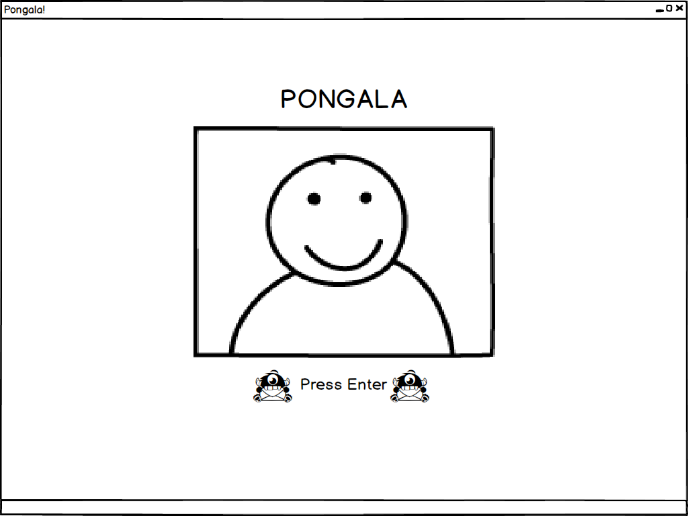
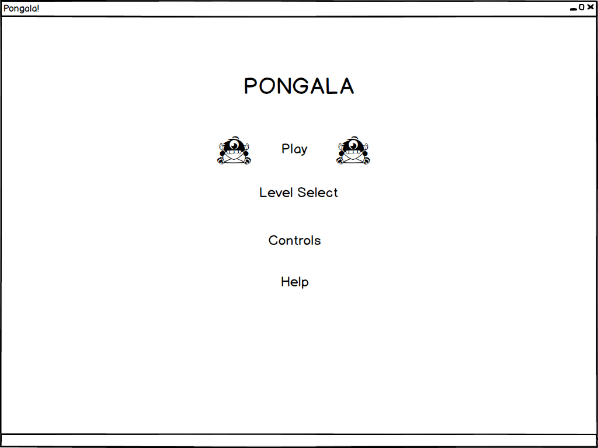
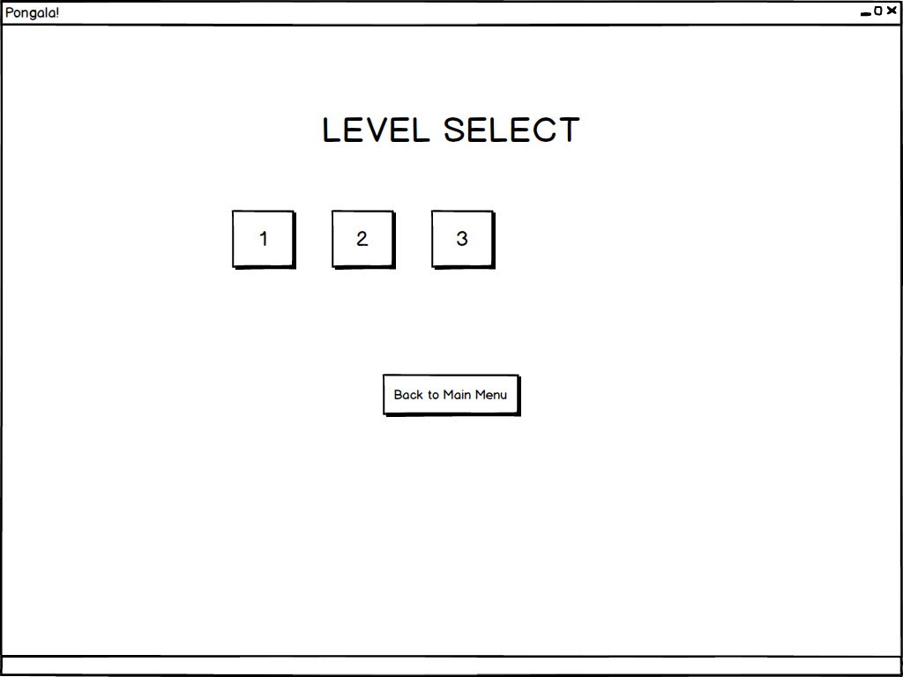
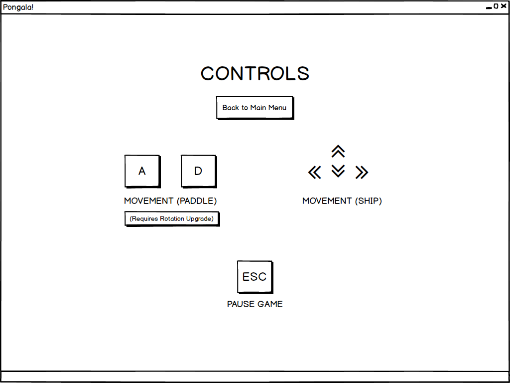
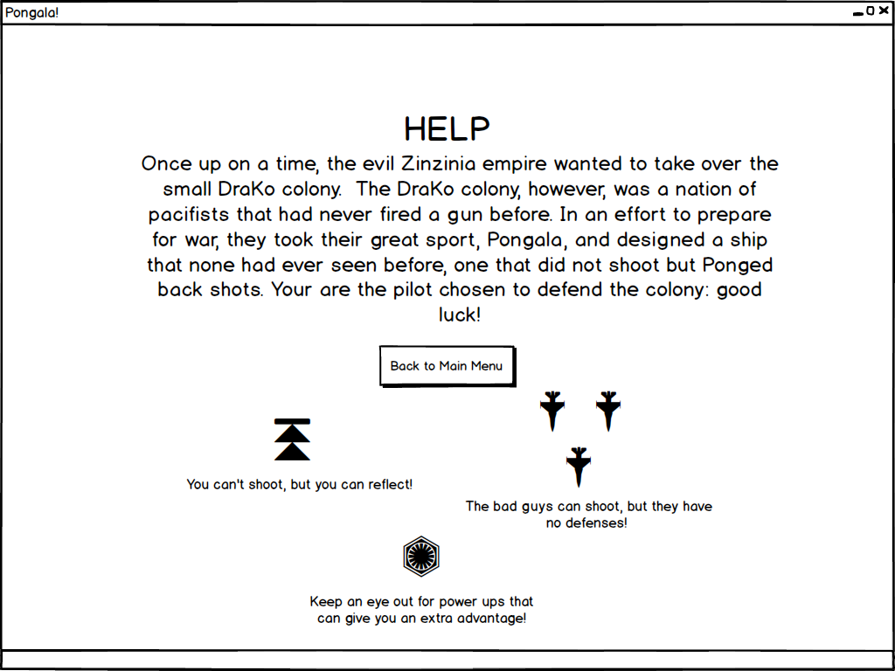
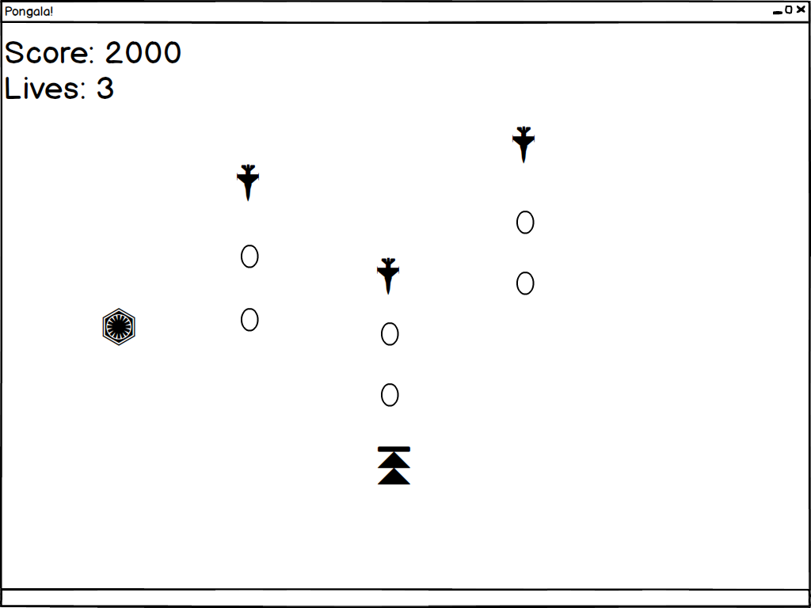
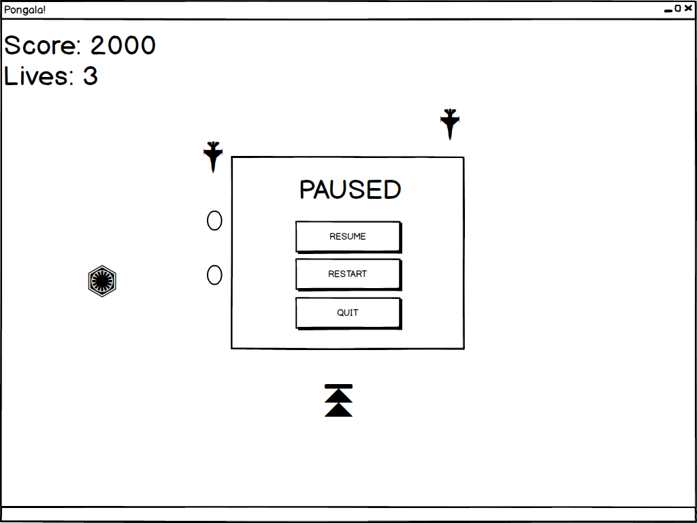

(1) game design document Web page---- https://pongala-rpm.firebaseapp.com/benchmark1.
(2) first deployed build, will include core gameplay and a complete user interface---- https://pongala-rpm.firebaseapp.com/benchmark2.
(3) second build, will include a complete basic level and sound and music---- https://pongala-rpm.firebaseapp.com/benchmark3.
(4) completed game, with all required levels and lots of fun---- https://pongala-rpm.firebaseapp.com/benchmark4.
INTRODUCTION
This document describes a game called "Pongala", which is designed to be a simple yet entertaining 2D top-down game. The game will employ sprite-based animation, collision detection, physics, efficient memory management, and more basic 2D game techniques.
TECHNOLOGY
Pongala will be developed for the PC using the Phaser game engine, which is a fast and free open source HTML5 game framework for making desktop and mobile browsers HTML5 games. Artworks will be simple, and will be made in Animated Poseur; additional artwork may be created in GIMP as needed. We will use a Version Control System, BitBucket, to maintain code, and Firebase to deploy our work.
BACK STORY
Once upon a time, the evil Zinzinia empire wanted to take over the small DraKo colony. The Drako colony, however, was a nation of pacifists that had never fired a gun before. To prepare for war, they took their great sport, Pongala, and designed a ship that none had ever seen before, one that did not shoot but reflect back the shots using its giant Pongala paddle.
You are the pilot chosen to defend the colony and will need to use the magic paddle to fight against the enemies.
OBJECTIVE
Your mission in Pongala is to destroy all the enemies by reflecting shots off their magic Pongala paddle. However, the paddle isn't invincible - if it takes too much damage it will break and spend a brief period of time being repaired. As you advance through the stages, the enemies will develop new tricks to try and get around your Pongala paddle, be it freezing you in place and forcing you to make use of your new paddle rotation technology or ambushing you from all sides of the screen. While you can simply evade enemies you are encouraged to destroy them with reflected shots to increase your score.
GAMEPLAY
The game will consist of 3 levels; the player can only advance to the next level after finishing the previous one. Each level consists of 3 or 4 stages and will lastly roughly three minutes.
The player will use the paddle to reflect and redirect the bullet back to the enemies. The paddle, however, can only reflect a certain number of bullets, and after being hit by 3 bullets consecutively, it will be broken for about 15 seconds. During this time, the player must be able to avoid bullets or enemy ships. If the player's ship is hit by a bullet or enemy, it will lose a life and become temporarily invincible for a few seconds. If the player can't lose any more lives, they die..
However, the player can receive power-ups to turn the battle in their favor, which appear at the top of screen and float down towards them - the player will have to touch them with either their body or the paddle. There are 3 kinds of power-ups:
- The first type gives one more life to the player.
- The second type will make the ping-pong paddle become bigger
- The third type, a powerful one, may kill all enemies on the screen at that moment.
- In the first stage, the enemies are lined up in a line.
- In the second stage, the enemies form complicated patterns, and there could be multiple enemies in a column, so the player should be careful when reflecting the enemies’ bullets. Note that the enemies continue to only move in straight paths.
- In the third stage, the enemies will also zig-zag, so that they can avoid the bullet reflected from the player’s paddle.
- In the final stage, the boss will appear; the player will have difficulty trying to hit the boss as they will have some method of avoiding or blocking shots themselves..
In the second level, the enemies will come from different locations around the walls, i.e, the screen’s borders. They will circle around and fight bullets at the player. The player cannot move due to the enemies's advanced freeze ray technology and can only use their new rotating paddle ability to fight against the enemies. The second level includes 3 stages:
- In the first stage, the enemies will be scattered around the world so that each location near the wall have only 1 enemy’s ship.
- In the second stage, however, at each location around the wall, there will be a well-formed group of enemies instead of just 1 enemy’s ship.
- In the final stage, the enemies can shoot bullets in several directions at a time.
In the third level, the first two level's mechanics are combined. The enemies can now have varying spawn locations and different paths. Fortunately, the player can also move in all 4 directions: up, down, left, right, and rotate its paddle; in other words, you are now tested on your ability to manipulate ship and paddle at the same time. There are also 3 stages in this level:
- In the first stage, the enemies can only move in straight paths.
- In the second stage, the enemies can move in zig-zag or other complicated paths.
- The boss, which can be a huge snake-like space ship, will appear in the last stage. It will move in an unpredictable path and shoot several bullets toward the player. If the player can defeat this final boss, he/she will win the game.
If time permits, we will consider adding an additional level where the ship's paddle takes a different, non-rectanglar shape, forcing the player to adapt to how their new paddle reflects bullets.
CONTROLS
This game will be played using both a keyboard and mouse. Once started, use the following:
- A - Rotate the ping-pong paddle to the left around the player
- D - Rotate the ping-pong paddle to the right around the player
- LEFT-ARROW - Move the ship Left
- RIGHT-ARROW - Move the ship Right
- UP-ARROW - Move the ship Up
- DOWN-ARROW - Move the ship Down
- ESC - Pause the game, loading a Pause Menu with options to resume, restart, or quit the current level.
- MOUSE - used to select options in menus.
GRAPHICAL USER INTERFACE
As far as the GUI is concerned, we will implement the following:
-

- Splash Screen - The splash screen GUI simply presents a game logo and a prompt for the user to press Enter to start the game when they are ready to play. Upon pressing Enter, an Main Menu will be displayed.
- Main Menu - At the beginning, whenever the player quits gameplay, or dies, we'll transition to a game menu that allows the player to select from the following options:
- Play - If pressed, the In-Game GUI will be displayed, and the game can begin.
- Level Select - If pressed, it will let user select the starting level to play. Otherwise, the player will start from lever 1 when Play is pressed.
- Controls - If pressed, the game will display an info screen that includes a brief description of all game controls.
- Help - is shown up to tell the back story for the game, the player’s mission and brief guide to attacking the enemies.
- Exit - If pressed, the game program will return to the In-Game Menu.
- Level Select - A screen where the player can select levels.
- 1 - Loads level 1.
- 2 - Loads level 2.
- 3 - Loads level 3.
- Back to Main Menu - Goes back to the Main Menu.
- Controls Screen - A screen informing the player of the controls mentioned in the CONTROLS section.
- Back to Main Menu - Goes back to the Main Menu.
- Help Screen - A simple help screen provided with the backstory and explains the elements of the game to the player. (Note that we keep the powerup effects a surprise!)
- Back to Main Menu - Goes back to the Main Menu.
- In-Game GUI - Once a game starts, the player’s spaceship and the enemies’ spaceships will show up, and the enemies will start shooting at the player. At this point, the player should control the ship and the paddle to both defend and attack the enemies. At any time, the player can use Esc to pause the game and enter the Pause Menu. While user is playing, the following objects will be displayed at all times:
- Score: score that player gains after killing the enemies.
- Lives: The player's remaining lives.
- The player’s ship with the paddle.
- Many enemy spaceships.
- The bullets from the enemies.
- The power-ups that appear from the top and float downwards.
- Pause Menu - Whenever the player hits the Esc key in game, the game will pause and a menu three options will appear:
- Resume - Closes the menu and resumes gameplay
- Restart - Restarts the level, for players who think they can do better.
- Quit - Ends the game and goes back to the Main Menu.






ARTWORK
All artwork in the game will be original. The following needs to be created:
- The player’s ship – The player’s ship is a simple yet unique figure that is meant to look like it was meant to hold a paddle around itself. It will require animations for:
- Moving around the field.
- Colliding with enemy ships.
- Blowing up when hit by a bullet and having no life count left.
- The player’s paddle – The player’s paddle is the main form of defense (the best offense) and is meant to be slightly fancier version of the paddle found in Pong or Breakout games. It will require animations for:
- Reflecting a bullet.
- Taking damage.
- Taking too much damage and breaking.
- Enlarging itself when the size-increasing power up is obtained.
- Enemy spaceships - These are simple sprites that will require animations for:
- Spawning in.
- Moving around the field.
- Shooting the bullet
- Colliding the player’s spaceship
- Bullets – The bullets from the enemies will look like a bright star. It requires animations for:
- Hitting either faction's ship.
- Background – The background will be made of a small space tile set that that consists of a combination of dark-colored space tiles and tiles with tiny stars on them.
- Background Layer Variation - Level 2 – Since the player is temporarily frozen in level 2, we may introduce an additional space station graphic layer that represents both the source of the freeze ray that hit the player in level 2 and where the ships are coming from.
SOUND EFFECTS
All sound effects will be original. Sounds must be made to coincide with each of the following events:
- Shooting
- Player death
- Enemy death
- Reflecting a bullet
- Player ship moving
MUSIC
Game Music will be copied from the MIDI file in the Radiobread project from SBU Student Music Page.